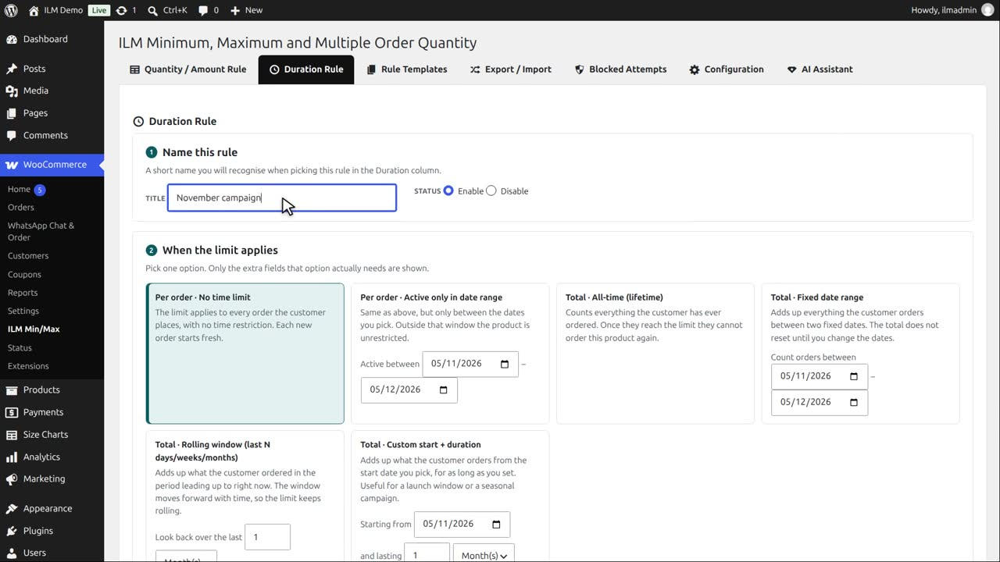
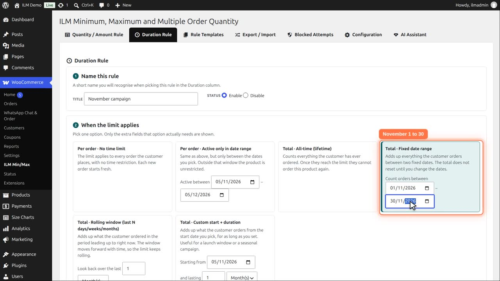
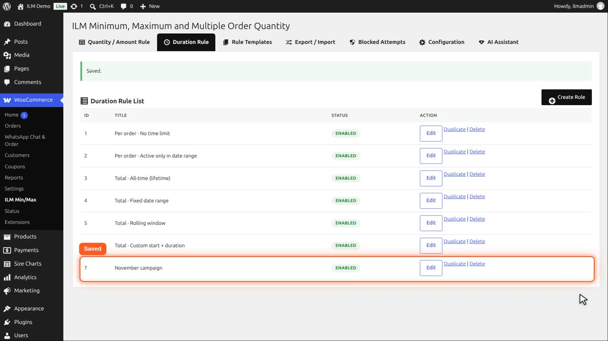
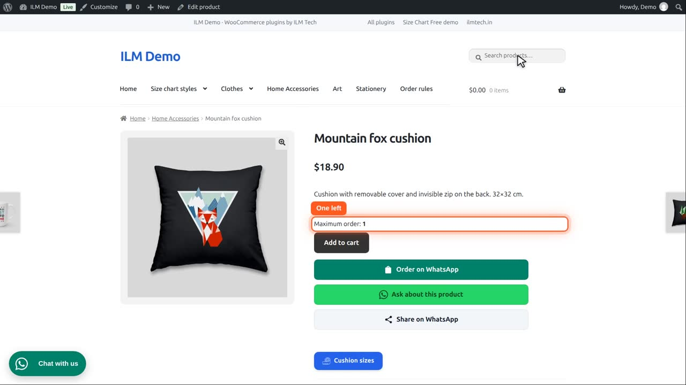

Pro add-on. This feature needs the Pro add-on. See Free and Pro.
| Type | Meaning |
|---|---|
| Total · Fixed date range | Adds up everything the customer orders between two fixed dates. The total does not reset until you change the dates. |
Create a duration rule, and name it November campaign.

Pick Total, fixed date range, from the first to the thirtieth of November. The total does not reset until you change the dates.

Keep the order statuses as they are, and save.

Give the Mountain fox cushion, maximum three, this duration rule.
Demo ordered two earlier this month, so one is left for November.

They add the one that is left, and a second one is refused. After the thirtieth, the rule shows Expired and no longer applies.